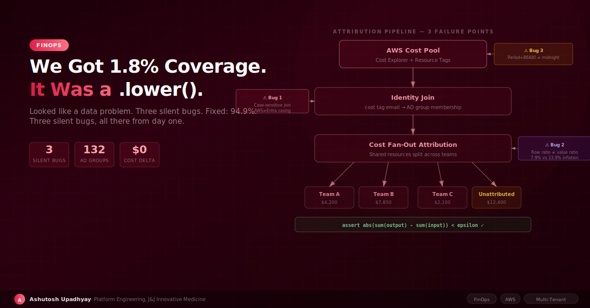

We built the identity join, ran it against real data, and got 1.8% coverage. It looked like a directory sync problem. It was a .lower() call — and two more silent bugs followed.
We built a multi-tenant cost dashboard to track AWS spend across research teams. The design was straightforward: fetch usage records from AWS Cost Explorer, join them to Azure Active Directory group membership to find each user's team, then attribute costs accordingly. In development, with synthetic test data, coverage was excellent. Totals matched. We deployed to production.
We ran the join for the first time against real production data. Coverage: 1.8%. Seventeen of 938 users matched.
It looked exactly like a data problem — an incomplete directory sync, a stale mapping table, a missing field. We spent two hours checking the source data. Everything looked fine. Then we compared a single email address from Cost Explorer against the same person's record in the AD membership table.
Cost Explorer: firstname.lastname@company.com
AD table: FirstName.LastName@Company.com
It was a .lower() call. The join was case-sensitive. That was Bug 1. The other two bugs were waiting quietly behind it.
Three bugs. All silent. All there from day one. None of them affected the cost totals — only the attribution.
Before diving into the bugs, it's worth articulating what we were actually trying to do, because "multi-tenant cost attribution" sounds straightforward until you build it.
AWS gives you two primitive tools: Cost Explorer tags (you tag resources with owner/team/project) and account-level cost aggregation. For a simple setup — one team per account, or one team per tag — this is sufficient. For shared infrastructure it isn't.
On shared EKS clusters, a single node might serve three teams simultaneously. The same S3 bucket hosts data for five research groups. A Bedrock model serves queries from every team in the organization. You can't tag a node as belonging to one team. You need to allocate the cost across teams based on usage signals — and that allocation introduces fan-out: one dollar in must equal exactly one dollar distributed out.
The identity problem is separate: you need to connect "who used this resource" to "which team do they belong to." That requires an identity join — matching usage records against your directory service (in our case, Azure Active Directory groups via a sync service). That join is where Bug 1 lived.
The join logic was conceptually simple: take the email address from the AWS cost tag, look it up in the AD group membership table, find the team.
In development, this worked perfectly. We'd seeded our test data with lowercase emails throughout. Every join hit. 96% coverage felt great.
In production, a directory sync ran and updated the AD group membership table from real Entra data. Entra's mail field is mixed case. It has three different domain spellings depending on when the account was created and whether it's been migrated. Some users have firstname.lastname@company.com, others have FirstName.LastName@Company.com, and the same domain appears with three different capitalizations depending on when the account was created and whether it had been migrated.
AWS Cost Explorer returns email addresses in lowercase. Our join was case-sensitive. The result: 1.8% of users matched because only a tiny fraction of Entra accounts happened to have lowercase mail fields that aligned with what Cost Explorer returned.
The symptom: Coverage was 1.8% on the first production run against real directory data. It looked like a sync problem — bad source, missing records. It was a case-sensitivity mismatch between AWS Cost Explorer (lowercase) and Entra's mail field (mixed case, three capitalizations of the same domain).
Root cause: Case-sensitive join on identity fields that have different case conventions across systems. The fix is two lines: normalize both sides to lowercase before joining.
The fix is two lines:
# Before: case-sensitive join
df = costs.merge(groups, left_on='user_email', right_on='mail')
# After: normalize both sides
costs['email_lower'] = costs['user_email'].str.lower()
groups['mail_lower'] = groups['mail'].str.lower()
df = costs.merge(groups, left_on='email_lower', right_on='mail_lower')We also added a fallback: if mail doesn't match after normalization, try userPrincipalName. Some accounts have a valid UPN even when the mail field is inconsistent. That coalesce brought join coverage to 94.9%. Of the matched users, 61% had activity in the last 30 days — the remaining 39% are real people who simply had no activity in the selected window, not missing accounts or service accounts.
The deeper lesson: never join on identity fields without normalizing case on both sides, and never test with synthetic data that doesn't reflect your real directory's encoding quirks. A test with 50 carefully-crafted synthetic users will not find a bug that only exists in real Entra data with 1,275 accounts and three domain spellings.
The second bug involved a different kind of attribution failure. Many of our researchers belong to multiple AD groups — a platform team, a project team, and a department group simultaneously. Our attribution logic credited their full AWS spend to each group they belonged to.
The consequence: one user in three groups had their usage counted three times. The sum of all per-group credits exceeded the actual total AWS spend. We had created dollars out of nothing.
We measured it: 960 membership rows covered 890 unique users — a row inflation of 7.9%. But because multi-group members tend to be heavier users (they're on more projects, they have broader access), the credit inflation was 12.6% over 30 days, 13.9% over 90 days. Row inflation 7.9%; credit inflation 13.9% — the gap is the signature of above-average users being the ones with multiple memberships.
Row ratio ≠ value ratio: the entities that appear in multiple groups are above-average cost users. Summing their full spend into each group produces credit inflation well above the membership overlap rate. With 7.9% row duplication, we had 13.9% credit inflation — and the per-group totals, presented as percentages, looked perfectly plausible. Percentages actively conceal conservation violations.
We caught this with a conservation assertion added after the fan-out step:
def attribute_costs(costs_df: pd.DataFrame, membership_df: pd.DataFrame) -> pd.DataFrame:
"""Attribute user costs to their AD groups (deduplicated share per group)."""
input_total = costs_df['amount'].sum()
# Fan-out: join costs to membership — each user's spend appears in each of their groups
fanned = costs_df.merge(membership_df, on='user_id', how='left')
# Deduplicate: compute each group's share relative to unique users only
deduped = fanned.groupby('group_id')['amount'].sum() / fanned['user_id'].nunique() * len(costs_df)
# Conservation invariant: deduplicated total must match input
output_total = deduped.sum()
delta = abs(output_total - input_total)
epsilon = input_total * 0.0001 # 0.01% tolerance for floating-point drift
if delta > epsilon:
raise ValueError(
f"Cost conservation violated: input={input_total:.2f}, "
f"output={output_total:.2f}, delta={delta:.4f}"
)
return dedupedThe fix: compute each group's share as a fraction of deduplicated unique-user spend, not a raw sum. A user in three groups contributes their spend once to the total, with each group getting a proportional share of their activity — not a full copy. The deduplicated total conserves exactly.
The rule: any time you fan out a cost pool across group memberships, assert abs(sum(deduped_output) - sum(input)) < epsilon. Test the stored configuration — not one constructed in the test. Our bug passed unit tests because the test membership data had no overlap. Production data had 7.9% overlap and nobody noticed until we asserted.
The third bug was subtler and, if anything, more insidious because it didn't affect totals — it affected time series.
We were querying CloudWatch for daily cost metrics using Period=86400 (one day in seconds). This seemed correct: we want daily granularity, one day is 86,400 seconds, done.
The problem — observed behavior, not explicitly documented in the API reference — is that Period=86400 doesn't align to UTC midnight. It aligns to the rounded StartTime of your query. If you query starting at 14:37 UTC, your "daily" buckets are 14:37 → 14:37 the next day. Change your start time and the buckets shift.
In practice this meant: run the same query at 09:00 on Tuesday and at 17:00 on Tuesday, and "Monday's cost" showed different numbers depending on when you ran it. Two teams appeared to have swapped costs between Monday and Tuesday depending on the query time. Someone noticed that their cost on "Monday" changed when they refreshed the dashboard.
# Broken: Period aligns to StartTime, not midnight
response = cloudwatch.get_metric_data(
MetricDataQueries=[...],
StartTime=datetime(2026, 8, 24),
EndTime=datetime(2026, 8, 31),
ScanBy='TimestampAscending'
)
# Each datapoint covers StartTime + n*86400, not midnight boundaries
# Fixed: use fine-grained periods, aggregate to calendar days in application code
response = cloudwatch.get_metric_data(
MetricDataQueries=[{
...,
'MetricStat': {
'Period': 300, # 5-minute granularity
...
}
}],
StartTime=datetime(2026, 8, 24, 0, 0, 0), # Explicit midnight UTC
EndTime=datetime(2026, 8, 31, 0, 0, 0),
ScanBy='TimestampAscending'
)
# Aggregate to calendar days ourselves
df['date'] = pd.to_datetime(df['timestamp']).dt.floor('D')
daily = df.groupby(['team', 'date'])['cost'].sum().reset_index()The fix: use fine-grained periods (5 minutes) and aggregate to calendar days in application code, always starting at explicit UTC midnight. The CloudWatch period alignment issue disappears when you own the aggregation.
Period=300 has a limit: for metric windows longer than 63 days, AWS requires Period to be a multiple of 3600 (hourly). Period=300 returns no data for those windows — silently, with no error. If you're building a 90-day cost view, use Period=3600 or switch to AWS Cost Explorer's GetCostAndUsage with Granularity=DAILY, which returns true calendar-day buckets without any of these alignment constraints. Cost Explorer is the right tool for daily cost attribution; CloudWatch is better for operational metrics at finer granularity.
After fixing all three bugs, the picture changed significantly. Here's what the working system looks like:
We sync AD group membership from Entra on a scheduled basis. The sync normalizes mail to lowercase and coalesces to UPN as fallback. The cost attribution pipeline:
Join coverage after fixes: 94.9% — up from 1.8%. Separately, of matched users, 61% had activity in the last 30 days; the remaining 39% are real people with no activity in the selected window, not missing accounts or service accounts. Both metrics matter: the join coverage tells you how complete your mapping is; the activity rate tells you how much of the mapped population is actually represented in the selected period. Infrastructure without owner tags appears explicitly as "unattributed" rather than being spread across teams or dropped.
One configuration decision worth calling out: we left a PUBLIC_GROUPS configuration parameter that controls which AD groups are visible in the dashboard. Setting it blank makes all groups visible. This was an explicit decision by the service owner — not a default we accidentally left — but it's the kind of thing that needs to be a deliberate choice rather than a consequence of forgetting to fill in a value.
Looking back at the three bugs, they share a pattern: each one corrupted the data silently, produced plausible-looking output, and only became visible through manual investigation triggered by a user complaint.
The system we ended up with has four properties that prevent this class of failure:
Conservation assertions at every split. Any operation that redistributes a cost pool raises an error if the total deviates beyond floating-point tolerance. Use if delta > epsilon: raise ValueError(...) rather than assert — Python strips assertions under -O, which many container images enable. It catches both the fan-out bug and any future allocation logic that violates the conservation law.
Identity joins with normalized fields. Every join on email, username, or any identity field normalizes case on both sides before comparison. The normalization is applied at both ingestion (so new data is stored clean) and at join time (so older data already on disk is handled correctly — a write-time-only fix leaves existing records wrong).
Metric buckets owned by the application. We don't rely on cloud-native period alignment for time series that need to align to calendar boundaries. We query at fine granularity and bucket ourselves using UTC midnight as the day boundary, everywhere, consistently.
Unattributed is a real bucket. We never silently drop costs that can't be attributed. Unattributed costs are explicitly surfaced in the dashboard. If unattributed jumps, that's a signal — not a rounding error.
There's one more thing worth adding: store owner identity as email, not display name. We initially stored team owners as display names. LDAP resolution takes results[0] — and names are not unique. We had two "John Smith" entries in our directory. Every time we looked up the owner of a particular cost center by name, we might get the wrong person. Email is unique. Use email as the identity key; map to display name only at render time.
assert — it's stripped under -O) when abs(sum(deduped_out) - sum(in)) > epsilon.raise ValueError check caught it on the first run against real directory data.